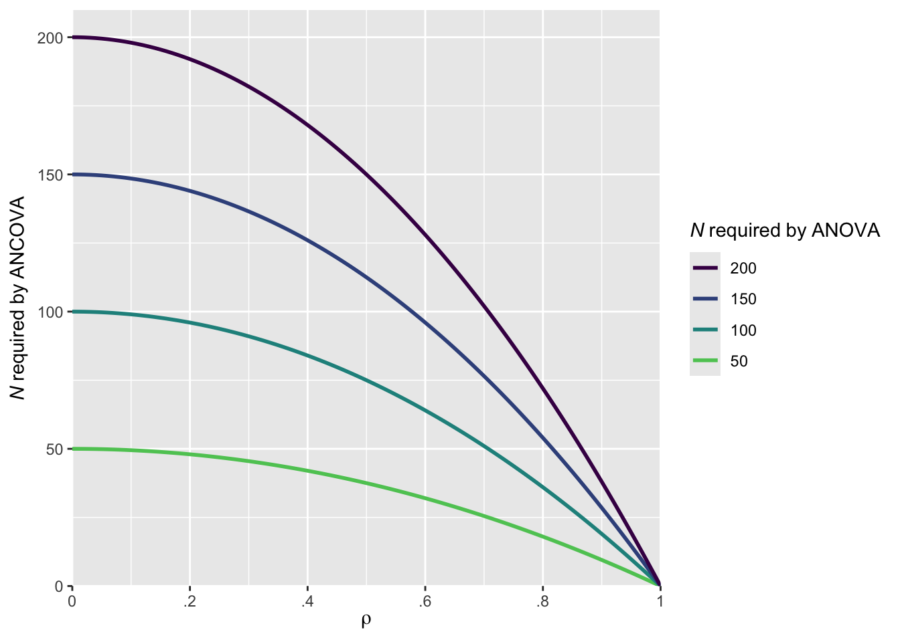

library(ggplot2) # figures
library(dplyr) # data wrangling
library(kableExtra) # create tables
library(pwr) # conduct power analyses
library(MBESS) # calculate effect sizes
library(purrr) # perform simulations
library(faux) # simulate data
library(broom) # create tidy tables
library(tidytable)
library(forcats)2 Things to consider to increase power
Besides increasing the sample size, there are other options that researchers can use to increase the statistical power of their study designs.
2.1 One-sided test vs. two-sided tests
One-sided tests usually achieve higher power than two-sided tests, assuming the same sample size, test and α. This is because the critical region for rejecting the null hypothesis is concentrated in one tail of the distribution, making it easier to detect an effect in the predicted direction. To illustrate this, let’s conduct two a priori power analyses using the following parameters: a Cohen’s d of 0.2, an independent t-test, an N of 200 and \(\alpha\) of 0.05.
# Set parameters
N <- 200 # sample size
smd <- 0.2 # effect size
alpha <- 0.05 # alpha level
type <- "two.sample" # type of t-test
one_sided <- pwr.t.test(
n = N/2,
d = smd,
sig.level = alpha,
type = type,
alternative = "greater"
)
two_sided <- pwr.t.test(
n = N/2,
d = smd,
sig.level = alpha,
type = type,
alternative = "two.sided"
)The results show that the one-sided test achieves a power of 0.4 whereas the two-sided test achieves a power of 0.3. This demonstrates the efficiency gain of one-sided tests when a directional hypothesis is justified. However, it is essential to ensure that the directionality of the hypothesis is appropriately aligned with the choice of the test. If there is no theoretical or empirical justification for expecting an effect in a specific direction, a two-sided test should be used. Furthermore, the directionality of the hypothesis should ideally be preregistered prior to data collection. Preregistration promotes transparency and can prevent practices such as switching from a two-sided to a one-sided test post hoc in order to achieve statistical significance. Such practices.
2.2 Decreasing variability of your effect
Standardized mean differences, such as those in the Cohen’s d family of effect sizes), are calculated by divinding the mean difference between two time points, conditions or groups by the standard deviation. For example, in a two-group design, this is typically expressed as Cohen’s ds, which represents the mean difference between two groups (intervention (INT) vs. control (CON)) divided by the pooled standard deviation (SD). Cohen’s ds can be calculated follows (Lakens 2013):
\[ d_{s} = \frac{\text{Mean}_{\text{INT}} - \text{Mean}_{\text{CON}}}{\text{SD}_{\text{Pooled}}} \tag{2.1}\]
If the mean difference between two groups is 10 and the SDpooled is 20, then ds = 0.2. However, if SDpooled = 15, ds = 0.67. This illustrates that the standardized mean difference increases either when the mean difference increases or when the variability in the data (SD) decreases. Thus, researchers can increase power by (1) increasing the mean difference between groups or measurements, and/or (2) reducing SD.
2.3 Using paired- or repeated-measures designs
Study designs based on paired or repeated-measures data typically achieve higher power than unpaired or between-subject data. This advantage arises because the same participants contribute multiple data points, introducing correlation between measurements. The stronger this correlation, the greater the power. Paired designs increase power because the correlation reduces SD of differences and therefore the standard errors.
# Set parameters
nsims <- 1000 # number of simulations
N <- 50 # sample size
mu1 <- 0.2 # mean group 1
mu2 <- 0.4 # mean group 2
sd <- 1 # common SD
rho <- c(0, 0.4, 0.8) # vector of correlations
alpha_level <- 0.05
# Simulation function
simulate_power <- function(rho) {
p_values <- replicate(nsims, {
df <- sim_design(
within = list(time = c("pre", "post")),
n = N,
mu = c(mu1, mu2),
sd = 1,
r = rho,
plot = FALSE
)
lm(df$post - df$pre ~ 1) |>
tidy() |>
pull(p.value)
})
mean(p_values < alpha_level)
}
# Run for all sample sizes
power_results <- tibble(r = rho,
power = map_dbl(rho, simulate_power))
# Return proportion of significant p-values
power_results |>
kable(caption = "Achieved power for an unpaired t-test assuming different correlations {#tab-table1}" ) |>
kable_styling()| r | power |
|---|---|
| 0.0 | 0.172 |
| 0.4 | 0.249 |
| 0.8 | 0.607 |
2.4 Including baseline covariates in ANCOVA model
This section is based on Solom Kurz’s blog post.
Adding baseline covariates to an ANOVA model-resulting in an ANCOVA model-will generally increase power in comparison to an ANOVA model. This is because ANCOVA adjusts for baseline differences between groups, reducing residual variance and thereby increasing the sensitivity to detect group differences. Borm (2007) presented an approximate sample size adjustment for cases where the primary outcome is measured both pre- and post-intervention. The adjustment is based on the correlation (\(\rho\)) between the pre- and post-measurements:
\[ N_{\text{adjusted}} = N_{\text{ANOVA}} \times (1 - \rho^2) \tag{2.2}\]
where NANOVA is the sample size required under the ANOVA model, \(\rho\) is the correlation between the pre- and the post-measurements and Nadjusted is the effective sample size when using ANCOVA
crossing(n = c(50, 100, 150, 200),
rho = seq(0, 1, by = 0.01)) |>
mutate(design_factor = 1 - rho^2) |>
mutate(n_ancova = design_factor * n,
n_group = factor(n)) |>
mutate(n_group = fct_rev(n_group)) |>
ggplot(aes(x = rho,
y = n_ancova,
color = n_group,
group = n)) +
geom_line(linewidth = 1) +
scale_color_viridis_d(expression(italic(N)~required~by~ANOVA),
option = "D", end = .75) +
scale_x_continuous(expression(rho),
expand = expansion(mult = 0),
breaks = 0:5 / 5,
labels = c("0", ".2", ".4", ".6", ".8", "1")) +
scale_y_continuous(expression(italic(N)~required~by~ANCOVA),
limits = c(0, 210),
expand = expansion(add = 0))
As illustrated in ?fig-figure6, the higher the correlation, the smaller the sample size required by the ANCOVA model compared to the ANOVA model. For instance, assuming a correlation of \(\rho\) = 0.7, the ANCOVA model will require approximately 102 participants to achieve the same power that would otherwise require 200 participants using a traditional ANOVA. The advantage of including baseline covariates is most pronounced when the correlation is high.
2.5 Adjust for multiple comparisons
If researchers plan to adjust for multiple comparisons, the alpha level used in the a priori power analysis should also be adjusted. For example, suppose a researcher aims to test whether Intervention A is superior to Intervention B in improving heart rate, blood pressure, and cholesterol levels, and is willing to claim support for the hypothesis if any one of these three outcomes shows improvement. In this case, because multiple tests are being conducted, the overall Type I error rate would be inflated if the nominal \(\alpha\) (e.g., 0.05) were applied to each test individually. Adjusting the alpha level (e.g., using a Bonferroni correction or other multiple-comparison procedures) ensures that the family-wise error rate remains controlled and should be incorporated into both study planning and power calculations.
adj <- pwr.t.test(
d = 0.2,
power = 0.8,
sig.level = 0.05/3, # assuming three multiple comparisons
type = "two.sample",
alternative = "greater"
)
adj
Two-sample t test power calculation
n = 442.0804
d = 0.2
sig.level = 0.01666667
power = 0.8
alternative = greater
NOTE: n is number in *each* groupThis study design would require a sample size of 443 to achieve a power of 0.8 with an alpha of 0.0166667.
However, if the researcher did not adjust \(\alpha\) in the a priori power analysis, the required sample size would be:
no_adj <- pwr.t.test(
d = 0.2,
power = 0.8,
sig.level = 0.05,
type = "two.sample",
alternative = "greater"
)
no_adj
Two-sample t test power calculation
n = 309.8065
d = 0.2
sig.level = 0.05
power = 0.8
alternative = greater
NOTE: n is number in *each* groupWith 310 participants per group, d = 0.2, and alpha = 0.05, this design achieves 80% power without correction.
But if we apply the adjusted \(\alpha\) to this smaller sample size:
pwr.t.test(
d = 0.2,
n = 310,
sig.level = 0.05/3, # assuming three multiple comparisons
type = "two.sample",
alternative = "greater"
)
Two-sample t test power calculation
n = 310
d = 0.2
sig.level = 0.01666667
power = 0.6395933
alternative = greater
NOTE: n is number in *each* groupThis shows that the study design would be underpowered once multiple-comparison correction is applied post hoc.